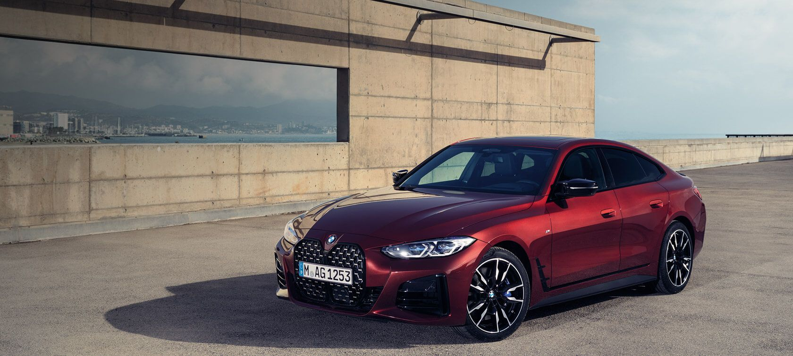
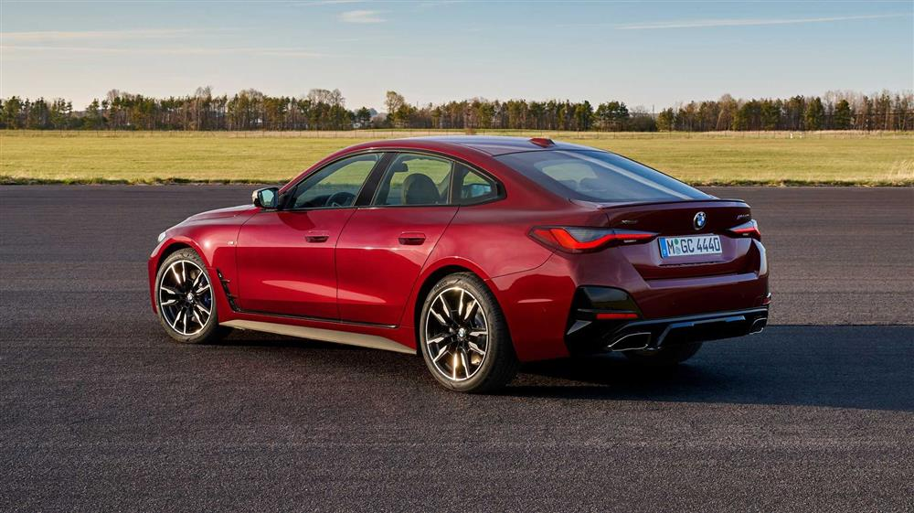
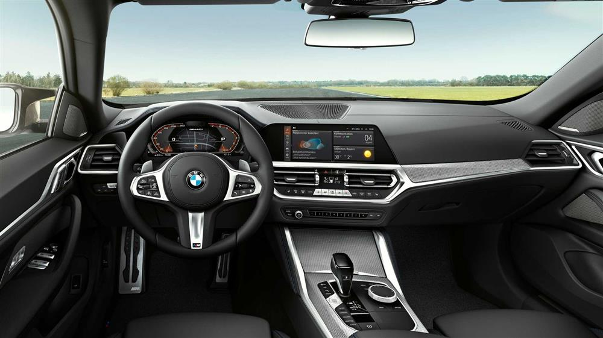

|  | ||||
| Motor ve Yakıt Tipi | Güç | 0-100KM | ||
| BENZİN | 170 bg | h:8.6 sn | ||
|
BMW 4 SERİSİ GRAN COUPÉ İLE SPORTİF KULLANIM. |
|
DİNAMİK SÜRÜŞ KARAKTERİ İLE ETKİLEYİCİ BMW 4 SERİSİ GRAN COUPÉ. |
|
BMW 4 SERİSİ GRAN COUPÉ SPORTİF ŞIKLIĞI GÜNLÜK KULLANIMIN BİR PARÇASI HALİNE GETİRİYOR. |

|
BMW 4 SERİSİ GRAN COUPÉ'NİN ESTETİK TASARIMI. |

|
BMW 4 SERİSİ GRAN COUPÉ'NİN GENİŞ İÇ TASARIMI. |